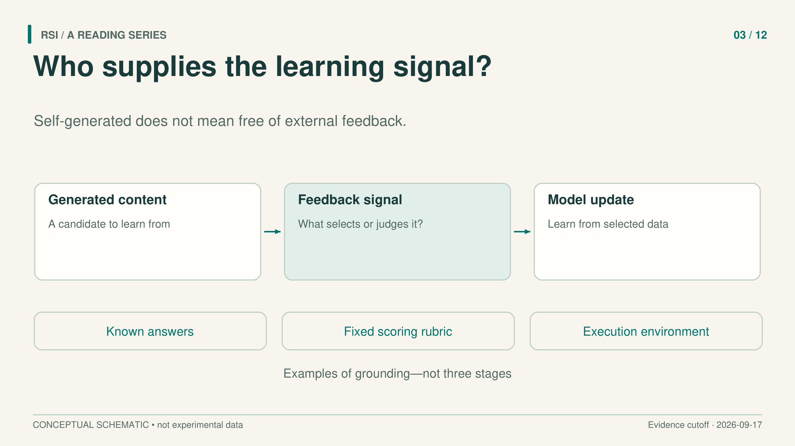
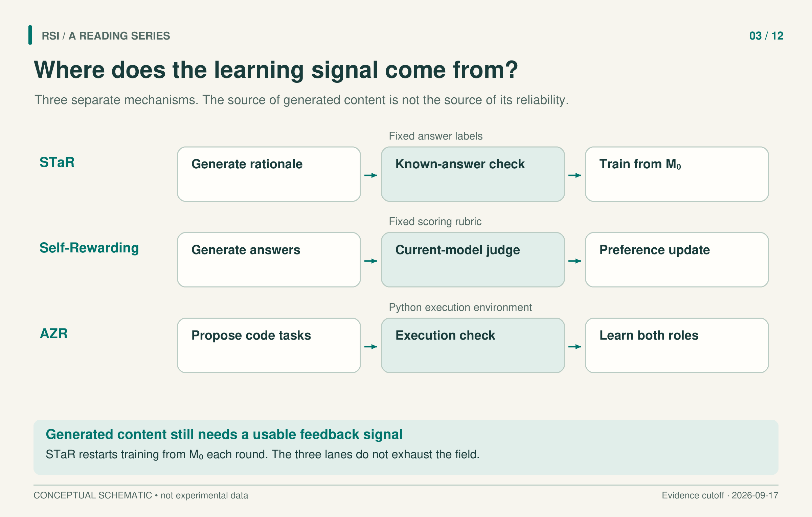

A model can generate more answers than a person could label. That solves the supply problem for training text. It leaves the selection problem: which answers should the next model imitate, and what information tells us they are worth learning?
The useful way to read self-training research is to follow that information. A known answer can filter a generated explanation. A reference response can anchor a comparison. A model can judge candidates under a fixed rubric. An execution environment can check a program. These signals do different jobs, even when the same model produces much of the text.

Follow the selection signal, not just the origin of the text.
When the answer is known but the explanation is missing
STaR starts with questions that have correct answers and a small number of reasoning demonstrations. The model generates a rationale and an answer. Only examples whose answer matches the label enter the training set.
This addresses a specific shortage: the dataset already tells us what the answer should be, but lacks enough explanations to train on. Difficult questions create a second problem. If the model never answers them correctly, they never supply training examples. STaR therefore also supplies the correct answer as a hint and asks the model to rationalize it. Successful examples can enter training after the answer hint is removed from the input.
One detail changes how we should understand the loop. Each round fine-tunes the original pretrained model on the newly generated, filtered dataset. It does not continue fine-tuning the previous round's weights. The previous model shapes the next training data; the training starting point remains fixed.
Imagine a multiple-choice example where the model picks the correct option but gives an unsupported explanation. This illustrative case passes an answer check. It shows why checking the endpoint cannot by itself establish faithful reasoning. STaR uses external answer labels, and the paper explicitly retains that limitation.
When the reference has already been used
Suppose a model has already undergone supervised fine-tuning: it has learned to imitate a set of reference responses. SPIN asks whether those same references can support further training by changing what they are compared against.
Each round generates new responses from the current model and trains against the contrast between these responses and the fixed references. The updated model then supplies the next round's opponent responses. The opponent changes; the target distribution stays anchored to existing demonstrations.
“No new human annotations” has a precise scope here. The experiment uses fixed UltraChat references originally generated through an external OpenAI Turbo API. It does not eliminate external demonstrations. Nor does its distribution-matching theory remove the need for assumptions such as realizability and global optimization. The experiment demonstrates finite updates, with task-dependent outcomes, rather than unlimited improvement from repeated self-play.
When the model also supplies the preference
A fixed evaluator may cease to discriminate useful differences as a model changes. Self-Rewarding Language Models places the current model in both roles: it generates answers and scores them using a fixed rubric. For each question, four answers receive three scores each, which are averaged. The highest- and lowest-scoring answers form a preference pair, unless tied.
Direct preference optimization, or DPO, then shifts the model toward preferred responses relative to dispreferred ones. Updating the model changes both next round's answerer and judge. The main sequence contains a supervised seed model followed by two DPO updates, using 3,964 and 6,942 preference pairs.
The external supports remain important. The seed includes instruction examples and evaluation examples filtered against human rankings. A fixed Llama 2-Chat model generates new questions, the scoring rubric stays fixed, and Claude 2 selects early stopping on validation examples.
Did the judge improve? On 541 held-out Open Assistant evaluation examples, pairwise agreement with human rankings rose from 78.7% for the seed to 81.7% for the final model. Yet “5-best” fell from 44.3% to 43.2% between the two updated models. This metric asks how often responses awarded a perfect 5/5 by the model are highest-ranked by humans. Five refers to the score, not the number of candidates; the evaluation averaged 2.85 responses per instruction. The result concerns agreement with human preferences, not objective truth, and the direction depends on the metric. The authors leave longer training chains and reward hacking unresolved.

Three mechanisms, not a historical sequence. STaR retrains from the original model; changing a judge does not imply changing its rubric.
When the system writes the exercises
The question pool can change too. Absolute Zero Reasoner, or AZR, uses one pretrained policy to propose and solve program-inference tasks. Researchers define the task types; a Python execution environment constructs and checks answers. Both proposing and solving contribute to policy updates.
The proposer needs useful difficulty. For each candidate task, the system samples eight solutions. If none succeeds, the proposer receives zero reward. Otherwise it receives one minus the observed success fraction. Completely solved tasks therefore also receive zero, while difficult tasks with at least one success receive a larger reward.
This selects using current performance. The paper calls the signal “learnability,” but it does not directly measure how much future capability training on that task will add. Likewise, “zero data” refers to no externally curated tasks and answers during this self-play phase. Pretraining, task definitions, filters, rewards, and the execution environment remain supplied. The two-run consistency check used for execution is an approximation, not a proof of determinism for every input.
When the model learns how to prepare its own training material
Zweiger and colleagues' SEAL asks a further question: can the model learn to turn new material into an effective adaptation for itself? This is Self-Adapting Language Models, a different work from Guo and colleagues' verification system with the same acronym.
Consider an illustrative new manual. The model could rewrite its contents into training text. An inner loop adapts the model using a candidate edit, through low-rank parameter updates called LoRA. An external task then tests the adapted model. The outer loop learns to generate edits that lead to better downstream performance.
In the manual example, a fluent rewrite is only a candidate. Testing two edits from the same starting model lets the evaluation concern what each adaptation taught the model. Comparing the prose alone would answer a different question. The downstream task is doing essential work in deciding which edit the outer loop should learn to produce.
The key feedback is therefore the consequence of learning from the edit. Candidate edits are tested in separate branches; they are not all permanently applied in sequence. The inner update function and external evaluation tasks remain fixed. The model still needs downstream tasks with reference answers to decide which edits helped.
ARC is a grid-transformation reasoning benchmark. SEAL evaluates adaptation configurations on a small subset of tasks already solvable by the base model using a known, human-designed test-time-training setup. This is not full ARC-AGI test accuracy. Its knowledge experiments also observe forgetting under consecutive edits. Learning to propose one useful adaptation does not establish that useful changes will accumulate indefinitely.
Draw the loop with its inputs
These methods move different components into learning: generated explanations, changing opponent responses, a judge, a task proposer, or an adaptation policy. This is a mechanism comparison, not a claim that they form a direct historical chain.
For a proposed self-training system, draw the generator, the selection signal, and the update. Label which external information remains fixed and which state reaches the next round. Then evaluate the resulting model outside the signal used to select its training material. The decisive question is what corrects the loop when its own output is wrong.
Sources
- Zelikman et al., STaR: Bootstrapping Reasoning With Reasoning, v2, 2022.
- Chen et al., Self-Play Fine-Tuning Converts Weak Language Models to Strong Language Models, v3, 2024.
- Yuan et al., Self-Rewarding Language Models, v3, 2025.
- Zhao et al., Absolute Zero: Reinforced Self-play Reasoning with Zero Data, v3, 2025.
- Zweiger et al., Self-Adapting Language Models, v2, 2025.
This article adapts a book with a literature cutoff of September 17, 2026. Experimental results are reported by the cited papers; this series did not rerun the experiments.